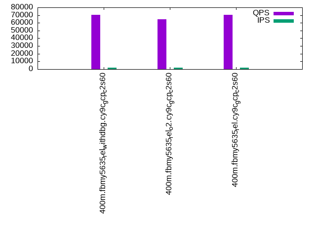

This is a report for the insert benchmark with 400M docs and 20 client(s). It is generated by scripts (bash, awk, sed) and Tufte might not be impressed. An overview of the insert benchmark is here and a short update is here. Below, by DBMS, I mean DBMS+version.config. An example is my8020.c10b40 where my means MySQL, 8020 is version 8.0.20 and c10b40 is the name for the configuration file.
The test server is c2-standard-60 from GCP with 30 cores, hyperthreading disabled, 240G RAM and 3T of NVMe storage. The benchmark was run with 20 clients and there were 1 or 2 connections per client (1 for queries, 1 for inserts). The benchmark loads 400M rows without secondary indexes, creates secondary indexes, loads another 400M rows then does 3 read+write tests for 1800 seconds each that do queries as fast as possible with 100, 500 and then 1000 writes/second/client concurrent with the queries. All clients shared one table. The database is cached by the storage engine and the only IO is for writes. Clients and the DBMS share one server. The per-database configs are in the per-database subdirectories here.
The tested DBMS are:
The numbers are inserts/s for l.i0 and l.i1, indexed docs (or rows) /s for l.x and queries/s for q*.2. The values are the average rate over the entire test for inserts (IPS) and queries (QPS). The range of values for IPS and QPS is split into 3 parts: bottom 25%, middle 50%, top 25%. Values in the bottom 25% have a red background, values in the top 25% have a green background and values in the middle have no color. A gray background is used for values that can be ignored because the DBMS did not sustain the target insert rate. Red backgrounds are not used when the minimum value is within 80% of the max value.
| dbms | l.i0 | l.x | l.i1 | q100.1 | q500.1 | q1000.1 |
|---|---|---|---|---|---|---|
| 400m.fbmy5635_rel_withdbg.cy9c_gcp_c2s60 | 715564 | 106240 | 150319 | 70286 | 68513 | 65744 |
| 400m.fbmy5635_rel_o2.cy9c_gcp_c2s60 | 727273 | 90664 | 151172 | 64955 | 63620 | 61621 |
| 400m.fbmy5635_rel.cy9c_gcp_c2s60 | 724638 | 107554 | 151458 | 70189 | 68893 | 66416 |
This table has relative throughput, throughput for the DBMS relative to the DBMS in the first line, using the absolute throughput from the previous table.
| dbms | l.i0 | l.x | l.i1 | q100.1 | q500.1 | q1000.1 |
|---|---|---|---|---|---|---|
| 400m.fbmy5635_rel_withdbg.cy9c_gcp_c2s60 | 1.00 | 1.00 | 1.00 | 1.00 | 1.00 | 1.00 |
| 400m.fbmy5635_rel_o2.cy9c_gcp_c2s60 | 1.02 | 0.85 | 1.01 | 0.92 | 0.93 | 0.94 |
| 400m.fbmy5635_rel.cy9c_gcp_c2s60 | 1.01 | 1.01 | 1.01 | 1.00 | 1.01 | 1.01 |
This lists the average rate of inserts/s for the tests that do inserts concurrent with queries. For such tests the query rate is listed in the table above. The read+write tests are setup so that the insert rate should match the target rate every second. Cells that are not at least 95% of the target have a red background to indicate a failure to satisfy the target.
| dbms | q100.1 | q500.1 | q1000.1 |
|---|---|---|---|
| fbmy5635_rel_withdbg.cy9c_gcp_c2s60 | 1976 | 9885 | 19769 |
| fbmy5635_rel_o2.cy9c_gcp_c2s60 | 1977 | 9885 | 19769 |
| fbmy5635_rel.cy9c_gcp_c2s60 | 1976 | 9885 | 19769 |
| target | 2000 | 10000 | 20000 |
l.i0: load without secondary indexes. Graphs for performance per 1-second interval are here.
Average throughput:
Insert response time histogram: each cell has the percentage of responses that take <= the time in the header and max is the max response time in seconds. For the max column values in the top 25% of the range have a red background and in the bottom 25% of the range have a green background. The red background is not used when the min value is within 80% of the max value.
| dbms | 256us | 1ms | 4ms | 16ms | 64ms | 256ms | 1s | 4s | 16s | gt | max |
|---|---|---|---|---|---|---|---|---|---|---|---|
| fbmy5635_rel_withdbg.cy9c_gcp_c2s60 | 1.454 | 98.396 | 0.112 | 0.002 | 0.035 | 0.001 | 0.269 | ||||
| fbmy5635_rel_o2.cy9c_gcp_c2s60 | 1.621 | 98.237 | 0.106 | 0.001 | 0.035 | 0.001 | 0.276 | ||||
| fbmy5635_rel.cy9c_gcp_c2s60 | 1.594 | 98.265 | 0.105 | 0.001 | 0.034 | 0.002 | 0.309 |
Performance metrics for the DBMS listed above. Some are normalized by throughput, others are not. Legend for results is here.
ips qps rps rmbps wps wmbps rpq rkbpq wpi wkbpi csps cpups cspq cpupq dbgb1 dbgb2 rss maxop p50 p99 tag 715564 0 0 0.0 539.0 143.5 0.000 0.000 0.001 0.205 133793 39.3 0.187 16 12.6 12.9 NA 0.269 37559 28868 400m.fbmy5635_rel_withdbg.cy9c_gcp_c2s60 727273 0 0 0.0 549.1 145.4 0.000 0.000 0.001 0.205 136617 39.1 0.188 16 12.6 12.9 NA 0.276 38258 28769 400m.fbmy5635_rel_o2.cy9c_gcp_c2s60 724638 0 0 0.0 549.8 144.6 0.000 0.000 0.001 0.204 136598 39.0 0.189 16 12.6 12.9 NA 0.309 37958 28580 400m.fbmy5635_rel.cy9c_gcp_c2s60
l.x: create secondary indexes.
Average throughput:
Performance metrics for the DBMS listed above. Some are normalized by throughput, others are not. Legend for results is here.
ips qps rps rmbps wps wmbps rpq rkbpq wpi wkbpi csps cpups cspq cpupq dbgb1 dbgb2 rss maxop p50 p99 tag 106240 0 0 0.0 50.2 13.1 0.000 0.000 0.000 0.126 567 2.9 0.005 8 25.4 25.7 NA 0.002 NA NA 400m.fbmy5635_rel_withdbg.cy9c_gcp_c2s60 90664 0 0 0.0 42.9 11.2 0.000 0.000 0.000 0.126 524 2.9 0.006 10 25.3 25.7 NA 0.002 NA NA 400m.fbmy5635_rel_o2.cy9c_gcp_c2s60 107554 0 0 0.0 50.9 11.7 0.000 0.000 0.000 0.111 575 2.9 0.005 8 25.3 25.7 NA 0.001 NA NA 400m.fbmy5635_rel.cy9c_gcp_c2s60
l.i1: continue load after secondary indexes created. Graphs for performance per 1-second interval are here.
Average throughput:
Insert response time histogram: each cell has the percentage of responses that take <= the time in the header and max is the max response time in seconds. For the max column values in the top 25% of the range have a red background and in the bottom 25% of the range have a green background. The red background is not used when the min value is within 80% of the max value.
| dbms | 256us | 1ms | 4ms | 16ms | 64ms | 256ms | 1s | 4s | 16s | gt | max |
|---|---|---|---|---|---|---|---|---|---|---|---|
| fbmy5635_rel_withdbg.cy9c_gcp_c2s60 | 0.057 | 7.311 | 92.594 | 0.035 | 0.004 | 0.242 | |||||
| fbmy5635_rel_o2.cy9c_gcp_c2s60 | 0.063 | 7.418 | 92.484 | 0.032 | 0.003 | 0.227 | |||||
| fbmy5635_rel.cy9c_gcp_c2s60 | 0.066 | 7.549 | 92.353 | 0.030 | 0.002 | 0.226 |
Performance metrics for the DBMS listed above. Some are normalized by throughput, others are not. Legend for results is here.
ips qps rps rmbps wps wmbps rpq rkbpq wpi wkbpi csps cpups cspq cpupq dbgb1 dbgb2 rss maxop p50 p99 tag 150319 0 15 2.4 594.9 172.3 0.000 0.016 0.004 1.174 141476 30.1 0.941 60 57.0 58.0 NA 0.242 7542 6942 400m.fbmy5635_rel_withdbg.cy9c_gcp_c2s60 151172 0 15 2.4 604.2 177.1 0.000 0.017 0.004 1.200 135507 29.4 0.896 58 55.0 56.1 NA 0.227 7545 6992 400m.fbmy5635_rel_o2.cy9c_gcp_c2s60 151458 0 15 2.4 611.1 176.4 0.000 0.016 0.004 1.193 140012 29.3 0.924 58 54.5 55.5 NA 0.226 7592 7042 400m.fbmy5635_rel.cy9c_gcp_c2s60
q100.1: range queries with 100 insert/s per client. Graphs for performance per 1-second interval are here.
Average throughput:
Query response time histogram: each cell has the percentage of responses that take <= the time in the header and max is the max response time in seconds. For max values in the top 25% of the range have a red background and in the bottom 25% of the range have a green background. The red background is not used when the min value is within 80% of the max value.
| dbms | 256us | 1ms | 4ms | 16ms | 64ms | 256ms | 1s | 4s | 16s | gt | max |
|---|---|---|---|---|---|---|---|---|---|---|---|
| fbmy5635_rel_withdbg.cy9c_gcp_c2s60 | 27.259 | 72.738 | 0.003 | nonzero | nonzero | 0.045 | |||||
| fbmy5635_rel_o2.cy9c_gcp_c2s60 | 6.415 | 93.579 | 0.006 | nonzero | nonzero | 0.029 | |||||
| fbmy5635_rel.cy9c_gcp_c2s60 | 26.821 | 73.176 | 0.003 | nonzero | nonzero | 0.037 |
Insert response time histogram: each cell has the percentage of responses that take <= the time in the header and max is the max response time in seconds. For max values in the top 25% of the range have a red background and in the bottom 25% of the range have a green background. The red background is not used when the min value is within 80% of the max value.
| dbms | 256us | 1ms | 4ms | 16ms | 64ms | 256ms | 1s | 4s | 16s | gt | max |
|---|---|---|---|---|---|---|---|---|---|---|---|
| fbmy5635_rel_withdbg.cy9c_gcp_c2s60 | 0.006 | 97.283 | 2.706 | 0.006 | 0.017 | ||||||
| fbmy5635_rel_o2.cy9c_gcp_c2s60 | 0.001 | 95.106 | 4.886 | 0.007 | 0.018 | ||||||
| fbmy5635_rel.cy9c_gcp_c2s60 | 0.011 | 95.525 | 4.462 | 0.001 | 0.016 |
Performance metrics for the DBMS listed above. Some are normalized by throughput, others are not. Legend for results is here.
ips qps rps rmbps wps wmbps rpq rkbpq wpi wkbpi csps cpups cspq cpupq dbgb1 dbgb2 rss maxop p50 p99 tag 1976 70286 0 0.0 18.3 4.9 0.000 0.000 0.009 2.535 293908 64.8 4.182 277 52.4 53.9 NA 0.045 3534 3260 400m.fbmy5635_rel_withdbg.cy9c_gcp_c2s60 1977 64955 0 0.0 22.5 6.3 0.000 0.000 0.011 3.251 270228 65.0 4.160 300 52.3 53.8 NA 0.029 3308 2877 400m.fbmy5635_rel_o2.cy9c_gcp_c2s60 1976 70189 0 0.0 18.0 4.8 0.000 0.000 0.009 2.494 294570 64.8 4.197 277 52.4 53.9 NA 0.037 3532 3133 400m.fbmy5635_rel.cy9c_gcp_c2s60
q500.1: range queries with 500 insert/s per client. Graphs for performance per 1-second interval are here.
Average throughput:
Query response time histogram: each cell has the percentage of responses that take <= the time in the header and max is the max response time in seconds. For max values in the top 25% of the range have a red background and in the bottom 25% of the range have a green background. The red background is not used when the min value is within 80% of the max value.
| dbms | 256us | 1ms | 4ms | 16ms | 64ms | 256ms | 1s | 4s | 16s | gt | max |
|---|---|---|---|---|---|---|---|---|---|---|---|
| fbmy5635_rel_withdbg.cy9c_gcp_c2s60 | 20.835 | 79.135 | 0.028 | 0.001 | 0.001 | 0.039 | |||||
| fbmy5635_rel_o2.cy9c_gcp_c2s60 | 4.778 | 95.186 | 0.034 | 0.002 | 0.001 | 0.044 | |||||
| fbmy5635_rel.cy9c_gcp_c2s60 | 22.815 | 77.155 | 0.028 | 0.001 | 0.001 | 0.039 |
Insert response time histogram: each cell has the percentage of responses that take <= the time in the header and max is the max response time in seconds. For max values in the top 25% of the range have a red background and in the bottom 25% of the range have a green background. The red background is not used when the min value is within 80% of the max value.
| dbms | 256us | 1ms | 4ms | 16ms | 64ms | 256ms | 1s | 4s | 16s | gt | max |
|---|---|---|---|---|---|---|---|---|---|---|---|
| fbmy5635_rel_withdbg.cy9c_gcp_c2s60 | 10.199 | 89.011 | 0.789 | 0.037 | |||||||
| fbmy5635_rel_o2.cy9c_gcp_c2s60 | 0.005 | 10.039 | 89.182 | 0.774 | 0.032 | ||||||
| fbmy5635_rel.cy9c_gcp_c2s60 | 0.006 | 10.419 | 88.820 | 0.755 | 0.031 |
Performance metrics for the DBMS listed above. Some are normalized by throughput, others are not. Legend for results is here.
ips qps rps rmbps wps wmbps rpq rkbpq wpi wkbpi csps cpups cspq cpupq dbgb1 dbgb2 rss maxop p50 p99 tag 9885 68513 0 0.0 52.6 15.2 0.000 0.000 0.005 1.579 277640 66.3 4.052 290 53.5 55.3 NA 0.039 3484 3165 400m.fbmy5635_rel_withdbg.cy9c_gcp_c2s60 9885 63620 0 0.0 54.5 15.9 0.000 0.000 0.006 1.643 259016 66.2 4.071 312 53.5 55.3 NA 0.044 3212 2941 400m.fbmy5635_rel_o2.cy9c_gcp_c2s60 9885 68893 0 0.0 54.0 15.7 0.000 0.000 0.005 1.626 279940 66.2 4.063 288 53.6 55.4 NA 0.039 3484 3180 400m.fbmy5635_rel.cy9c_gcp_c2s60
q1000.1: range queries with 1000 insert/s per client. Graphs for performance per 1-second interval are here.
Average throughput:
Query response time histogram: each cell has the percentage of responses that take <= the time in the header and max is the max response time in seconds. For max values in the top 25% of the range have a red background and in the bottom 25% of the range have a green background. The red background is not used when the min value is within 80% of the max value.
| dbms | 256us | 1ms | 4ms | 16ms | 64ms | 256ms | 1s | 4s | 16s | gt | max |
|---|---|---|---|---|---|---|---|---|---|---|---|
| fbmy5635_rel_withdbg.cy9c_gcp_c2s60 | 11.609 | 88.338 | 0.052 | 0.001 | nonzero | 0.043 | |||||
| fbmy5635_rel_o2.cy9c_gcp_c2s60 | 2.776 | 97.161 | 0.061 | 0.001 | nonzero | 0.037 | |||||
| fbmy5635_rel.cy9c_gcp_c2s60 | 14.469 | 85.480 | 0.050 | 0.001 | nonzero | 0.046 |
Insert response time histogram: each cell has the percentage of responses that take <= the time in the header and max is the max response time in seconds. For max values in the top 25% of the range have a red background and in the bottom 25% of the range have a green background. The red background is not used when the min value is within 80% of the max value.
| dbms | 256us | 1ms | 4ms | 16ms | 64ms | 256ms | 1s | 4s | 16s | gt | max |
|---|---|---|---|---|---|---|---|---|---|---|---|
| fbmy5635_rel_withdbg.cy9c_gcp_c2s60 | 16.124 | 83.157 | 0.718 | 0.038 | |||||||
| fbmy5635_rel_o2.cy9c_gcp_c2s60 | 0.003 | 16.863 | 82.630 | 0.504 | 0.035 | ||||||
| fbmy5635_rel.cy9c_gcp_c2s60 | 0.010 | 15.862 | 83.479 | 0.649 | 0.036 |
Performance metrics for the DBMS listed above. Some are normalized by throughput, others are not. Legend for results is here.
ips qps rps rmbps wps wmbps rpq rkbpq wpi wkbpi csps cpups cspq cpupq dbgb1 dbgb2 rss maxop p50 p99 tag 19769 65744 0 0.0 105.9 31.7 0.000 0.000 0.005 1.642 261536 68.3 3.978 312 56.0 56.3 NA 0.043 3324 3023 400m.fbmy5635_rel_withdbg.cy9c_gcp_c2s60 19769 61621 0 0.0 100.8 30.0 0.000 0.000 0.005 1.555 248578 68.0 4.034 331 56.0 56.3 NA 0.037 3100 2877 400m.fbmy5635_rel_o2.cy9c_gcp_c2s60 19769 66416 0 0.0 108.2 32.1 0.000 0.000 0.005 1.664 265043 68.2 3.991 308 55.9 56.3 NA 0.046 3372 3084 400m.fbmy5635_rel.cy9c_gcp_c2s60
l.i0: load without secondary indexes
Performance metrics for all DBMS, not just the ones listed above. Some are normalized by throughput, others are not. Legend for results is here.
ips qps rps rmbps wps wmbps rpq rkbpq wpi wkbpi csps cpups cspq cpupq dbgb1 dbgb2 rss maxop p50 p99 tag 715564 0 0 0.0 539.0 143.5 0.000 0.000 0.001 0.205 133793 39.3 0.187 16 12.6 12.9 NA 0.269 37559 28868 400m.fbmy5635_rel_withdbg.cy9c_gcp_c2s60 727273 0 0 0.0 549.1 145.4 0.000 0.000 0.001 0.205 136617 39.1 0.188 16 12.6 12.9 NA 0.276 38258 28769 400m.fbmy5635_rel_o2.cy9c_gcp_c2s60 724638 0 0 0.0 549.8 144.6 0.000 0.000 0.001 0.204 136598 39.0 0.189 16 12.6 12.9 NA 0.309 37958 28580 400m.fbmy5635_rel.cy9c_gcp_c2s60
l.x: create secondary indexes
Performance metrics for all DBMS, not just the ones listed above. Some are normalized by throughput, others are not. Legend for results is here.
ips qps rps rmbps wps wmbps rpq rkbpq wpi wkbpi csps cpups cspq cpupq dbgb1 dbgb2 rss maxop p50 p99 tag 106240 0 0 0.0 50.2 13.1 0.000 0.000 0.000 0.126 567 2.9 0.005 8 25.4 25.7 NA 0.002 NA NA 400m.fbmy5635_rel_withdbg.cy9c_gcp_c2s60 90664 0 0 0.0 42.9 11.2 0.000 0.000 0.000 0.126 524 2.9 0.006 10 25.3 25.7 NA 0.002 NA NA 400m.fbmy5635_rel_o2.cy9c_gcp_c2s60 107554 0 0 0.0 50.9 11.7 0.000 0.000 0.000 0.111 575 2.9 0.005 8 25.3 25.7 NA 0.001 NA NA 400m.fbmy5635_rel.cy9c_gcp_c2s60
l.i1: continue load after secondary indexes created
Performance metrics for all DBMS, not just the ones listed above. Some are normalized by throughput, others are not. Legend for results is here.
ips qps rps rmbps wps wmbps rpq rkbpq wpi wkbpi csps cpups cspq cpupq dbgb1 dbgb2 rss maxop p50 p99 tag 150319 0 15 2.4 594.9 172.3 0.000 0.016 0.004 1.174 141476 30.1 0.941 60 57.0 58.0 NA 0.242 7542 6942 400m.fbmy5635_rel_withdbg.cy9c_gcp_c2s60 151172 0 15 2.4 604.2 177.1 0.000 0.017 0.004 1.200 135507 29.4 0.896 58 55.0 56.1 NA 0.227 7545 6992 400m.fbmy5635_rel_o2.cy9c_gcp_c2s60 151458 0 15 2.4 611.1 176.4 0.000 0.016 0.004 1.193 140012 29.3 0.924 58 54.5 55.5 NA 0.226 7592 7042 400m.fbmy5635_rel.cy9c_gcp_c2s60
q100.1: range queries with 100 insert/s per client
Performance metrics for all DBMS, not just the ones listed above. Some are normalized by throughput, others are not. Legend for results is here.
ips qps rps rmbps wps wmbps rpq rkbpq wpi wkbpi csps cpups cspq cpupq dbgb1 dbgb2 rss maxop p50 p99 tag 1976 70286 0 0.0 18.3 4.9 0.000 0.000 0.009 2.535 293908 64.8 4.182 277 52.4 53.9 NA 0.045 3534 3260 400m.fbmy5635_rel_withdbg.cy9c_gcp_c2s60 1977 64955 0 0.0 22.5 6.3 0.000 0.000 0.011 3.251 270228 65.0 4.160 300 52.3 53.8 NA 0.029 3308 2877 400m.fbmy5635_rel_o2.cy9c_gcp_c2s60 1976 70189 0 0.0 18.0 4.8 0.000 0.000 0.009 2.494 294570 64.8 4.197 277 52.4 53.9 NA 0.037 3532 3133 400m.fbmy5635_rel.cy9c_gcp_c2s60
q500.1: range queries with 500 insert/s per client
Performance metrics for all DBMS, not just the ones listed above. Some are normalized by throughput, others are not. Legend for results is here.
ips qps rps rmbps wps wmbps rpq rkbpq wpi wkbpi csps cpups cspq cpupq dbgb1 dbgb2 rss maxop p50 p99 tag 9885 68513 0 0.0 52.6 15.2 0.000 0.000 0.005 1.579 277640 66.3 4.052 290 53.5 55.3 NA 0.039 3484 3165 400m.fbmy5635_rel_withdbg.cy9c_gcp_c2s60 9885 63620 0 0.0 54.5 15.9 0.000 0.000 0.006 1.643 259016 66.2 4.071 312 53.5 55.3 NA 0.044 3212 2941 400m.fbmy5635_rel_o2.cy9c_gcp_c2s60 9885 68893 0 0.0 54.0 15.7 0.000 0.000 0.005 1.626 279940 66.2 4.063 288 53.6 55.4 NA 0.039 3484 3180 400m.fbmy5635_rel.cy9c_gcp_c2s60
q1000.1: range queries with 1000 insert/s per client
Performance metrics for all DBMS, not just the ones listed above. Some are normalized by throughput, others are not. Legend for results is here.
ips qps rps rmbps wps wmbps rpq rkbpq wpi wkbpi csps cpups cspq cpupq dbgb1 dbgb2 rss maxop p50 p99 tag 19769 65744 0 0.0 105.9 31.7 0.000 0.000 0.005 1.642 261536 68.3 3.978 312 56.0 56.3 NA 0.043 3324 3023 400m.fbmy5635_rel_withdbg.cy9c_gcp_c2s60 19769 61621 0 0.0 100.8 30.0 0.000 0.000 0.005 1.555 248578 68.0 4.034 331 56.0 56.3 NA 0.037 3100 2877 400m.fbmy5635_rel_o2.cy9c_gcp_c2s60 19769 66416 0 0.0 108.2 32.1 0.000 0.000 0.005 1.664 265043 68.2 3.991 308 55.9 56.3 NA 0.046 3372 3084 400m.fbmy5635_rel.cy9c_gcp_c2s60
Insert response time histogram
256us 1ms 4ms 16ms 64ms 256ms 1s 4s 16s gt max tag 0.000 1.454 98.396 0.112 0.002 0.035 0.001 0.000 0.000 0.000 0.269 fbmy5635_rel_withdbg.cy9c_gcp_c2s60 0.000 1.621 98.237 0.106 0.001 0.035 0.001 0.000 0.000 0.000 0.276 fbmy5635_rel_o2.cy9c_gcp_c2s60 0.000 1.594 98.265 0.105 0.001 0.034 0.002 0.000 0.000 0.000 0.309 fbmy5635_rel.cy9c_gcp_c2s60
TODO - determine whether there is data for create index response time
Insert response time histogram
256us 1ms 4ms 16ms 64ms 256ms 1s 4s 16s gt max tag 0.000 0.057 7.311 92.594 0.035 0.004 0.000 0.000 0.000 0.000 0.242 fbmy5635_rel_withdbg.cy9c_gcp_c2s60 0.000 0.063 7.418 92.484 0.032 0.003 0.000 0.000 0.000 0.000 0.227 fbmy5635_rel_o2.cy9c_gcp_c2s60 0.000 0.066 7.549 92.353 0.030 0.002 0.000 0.000 0.000 0.000 0.226 fbmy5635_rel.cy9c_gcp_c2s60
Query response time histogram
256us 1ms 4ms 16ms 64ms 256ms 1s 4s 16s gt max tag 27.259 72.738 0.003 nonzero nonzero 0.000 0.000 0.000 0.000 0.000 0.045 fbmy5635_rel_withdbg.cy9c_gcp_c2s60 6.415 93.579 0.006 nonzero nonzero 0.000 0.000 0.000 0.000 0.000 0.029 fbmy5635_rel_o2.cy9c_gcp_c2s60 26.821 73.176 0.003 nonzero nonzero 0.000 0.000 0.000 0.000 0.000 0.037 fbmy5635_rel.cy9c_gcp_c2s60
Insert response time histogram
256us 1ms 4ms 16ms 64ms 256ms 1s 4s 16s gt max tag 0.000 0.006 97.283 2.706 0.006 0.000 0.000 0.000 0.000 0.000 0.017 fbmy5635_rel_withdbg.cy9c_gcp_c2s60 0.000 0.001 95.106 4.886 0.007 0.000 0.000 0.000 0.000 0.000 0.018 fbmy5635_rel_o2.cy9c_gcp_c2s60 0.000 0.011 95.525 4.462 0.001 0.000 0.000 0.000 0.000 0.000 0.016 fbmy5635_rel.cy9c_gcp_c2s60
Query response time histogram
256us 1ms 4ms 16ms 64ms 256ms 1s 4s 16s gt max tag 20.835 79.135 0.028 0.001 0.001 0.000 0.000 0.000 0.000 0.000 0.039 fbmy5635_rel_withdbg.cy9c_gcp_c2s60 4.778 95.186 0.034 0.002 0.001 0.000 0.000 0.000 0.000 0.000 0.044 fbmy5635_rel_o2.cy9c_gcp_c2s60 22.815 77.155 0.028 0.001 0.001 0.000 0.000 0.000 0.000 0.000 0.039 fbmy5635_rel.cy9c_gcp_c2s60
Insert response time histogram
256us 1ms 4ms 16ms 64ms 256ms 1s 4s 16s gt max tag 0.000 0.000 10.199 89.011 0.789 0.000 0.000 0.000 0.000 0.000 0.037 fbmy5635_rel_withdbg.cy9c_gcp_c2s60 0.000 0.005 10.039 89.182 0.774 0.000 0.000 0.000 0.000 0.000 0.032 fbmy5635_rel_o2.cy9c_gcp_c2s60 0.000 0.006 10.419 88.820 0.755 0.000 0.000 0.000 0.000 0.000 0.031 fbmy5635_rel.cy9c_gcp_c2s60
Query response time histogram
256us 1ms 4ms 16ms 64ms 256ms 1s 4s 16s gt max tag 11.609 88.338 0.052 0.001 nonzero 0.000 0.000 0.000 0.000 0.000 0.043 fbmy5635_rel_withdbg.cy9c_gcp_c2s60 2.776 97.161 0.061 0.001 nonzero 0.000 0.000 0.000 0.000 0.000 0.037 fbmy5635_rel_o2.cy9c_gcp_c2s60 14.469 85.480 0.050 0.001 nonzero 0.000 0.000 0.000 0.000 0.000 0.046 fbmy5635_rel.cy9c_gcp_c2s60
Insert response time histogram
256us 1ms 4ms 16ms 64ms 256ms 1s 4s 16s gt max tag 0.000 0.000 16.124 83.157 0.718 0.000 0.000 0.000 0.000 0.000 0.038 fbmy5635_rel_withdbg.cy9c_gcp_c2s60 0.000 0.003 16.863 82.630 0.504 0.000 0.000 0.000 0.000 0.000 0.035 fbmy5635_rel_o2.cy9c_gcp_c2s60 0.000 0.010 15.862 83.479 0.649 0.000 0.000 0.000 0.000 0.000 0.036 fbmy5635_rel.cy9c_gcp_c2s60